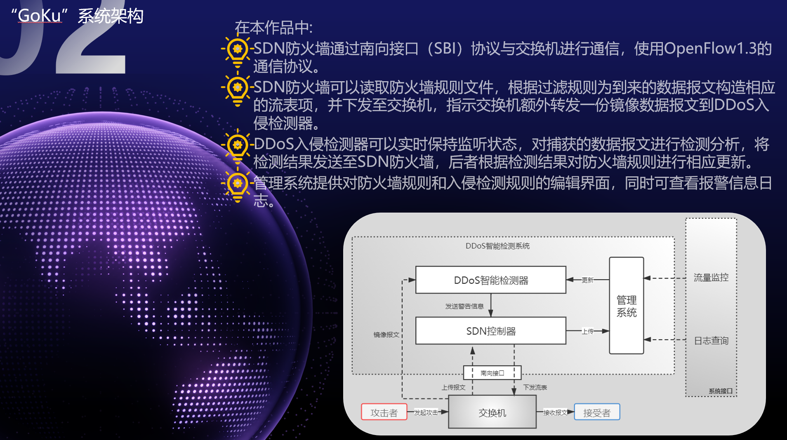

设计方案
系统各模块间的交互与核心功能实现如下：
- SDN防火墙与交换机通信： SDN 防火墙通过南向接口（SBI）协议与网络中的交换机进行通信，具体采用 OpenFlow 1.3 版本作为通信协议标准。
- 流量镜像与规则下发： SDN 防火墙能够读取预设的防火墙规则文件。根据这些过滤规则，为进入网络的数据报文构造相应的流表项，并将这些流表项下发至交换机。同时，指示交换机将相关流量额外转发一份镜像数据报文到DDoS 入侵检测器，以供分析。
- 入侵检测与反馈： DDoS 入侵检测器实时保持监听状态，对从交换机捕获的数据报文进行深度检测与分析。一旦检测到可疑攻击行为，会将检测结果（例如攻击类型、源IP、目标IP等信息）通过REST API或消息队列等方式发送至SDN 防火墙。
- 动态策略更新： SDN 防火墙根据从DDoS 入侵检测器接收到的检测结果，动态地对防火墙规则进行相应更新，例如添加新的阻止规则或修改现有规则，以应对新出现的威胁。
- 管理系统功能： 管理系统为用户提供了对防火墙规则和入侵检测规则的在线编辑界面，使得管理员可以方便地调整和优化防御策略。同时，系统还支持查看实时报警信息日志、历史攻击数据统计与可视化图表，帮助管理员追踪安全事件和评估系统性能。
